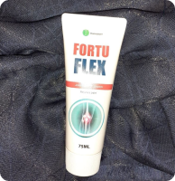
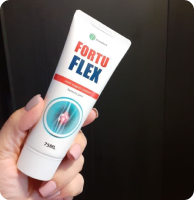
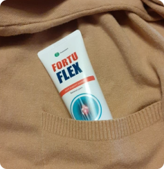
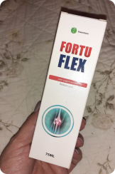

salud de la nación
100-летний марафонец George Etzweiler удивил весь мир своим здоровьем. Рецепт здоровых суставов
George Etzweiler
100-летний марафонец
Весь мир поразили видеокадры George Etzweiler – участника 50-мильного ультрамарафона, который резво преодолевал марафонскую трассу, невзирая на свой 100-летний возраст. Учитывая интерес аудитории нашего телеканала к персоне марафонца, мы решили подготовить специальное интервью с этим человеком. Как George в таком возрасте может бежать марафоны? В чем секрет его долголетия? Ответы на эти и другие вопросы Вы узнаете в нашем интервью.
История жизни George Etzweiler
На фотографии с Джорджем его жена Мери. Она скончалась от фиброза в 2010.
“Мое сердце” - как он говорит о ней.
Редакция: George, спасибо, что Вы согласились пообщаться с нами. Думаю, Вы знаете о своей популярности в интернете? Миллионы пользователей по всему миру были очень удивлены, увидев Ваш забег.
George: Здравствуйте. Да, несмотря на свой возраст, я иногда пользуюсь интернетом и был приятно удивлен свалившейся на меня славе.
Редакция: Давайте начнем с Вашей юности. Как мы смогли узнать из других интервью, спортом Вы начали заниматься именно в этот период?
George: Да, совершенно верно. Все началось со спортивных занятий и тренировок в период моей службы на флоте. Чтобы поддерживать себя в форме, особое внимание я уделял бегу. Я не мог назвать себя настоящим спортсменом, скорее, я просто соблюдал активный образ жизни. По возвращению из армии я получил степень инженера-электрика и начал работать в одной из энергетических компаний. Мои занятия бегом в армии стали привычкой, и я решил, что буду бегать каждый день.
Редакция: То есть, Вы занимаетесь бегом уже больше 80 лет?
George: На самом деле, нет. У меня был длинный 5-летний перерыв, когда мне исполнился 41 год.

В свои 100 лет Джордж занимается в зале с тренером и соблюдает режим
Редакция: С чем был связан такой долгий перерыв?
George: В возрасте 41 года я, как и всегда, решил отправиться на вечернюю пробежку. Я всегда бегал примерно с одной скоростью, в одном темпе. В тот вечер я решил немного ускориться – не поверите, я хотел закончить пробежку пораньше, чтобы успеть к фильму, который должен был идти по телевизору. Неожиданно для себя я почувствовал какую-то странную скованность движений. Даже начало пробежки приносило болезненные ощущения и приводило к слабости во всем теле. Конечно же, я не стал продолжать пробежку, а пошел домой: решил, что это последствия усиленных спортивных нагрузок.
Но и на следующий день меня опять преследовали эти симптомы. Через неделю после того случая дошло до того, что я тяжело вставал с кровати и не мог сделать обычные бытовые дела. Во время подвижных движений я ощущал острую боль, которая усиливалась при прикосновении к суставам. У меня начали хрустеть локтевые, коленные и тазобедренные суставы.
Спустя несколько дней добавились и другие симптомы – припухлости и отеки вокруг суставов, локальные покраснения кожи. Иногда конечности как будто немели на некоторое время: я даже не мог взять кружку, потому что очень болели пальцы. Когда к этим симптомам добавилась и высокая температура, я сильно испугался, и решил отправиться к врачу.
Хрящ пораженный артрозом
Нормальный хрящ
После сдачи анализов и прохождения исследований мой лечащий врач сказал, что у меня заболевания суставов: ревматоидный артрит и полиартрит. Признаюсь, я был сильно удивлен – почти всю свою сознательную жизнь я занимался спортом, и никак не ожидал, что проблемы с суставами могут коснуться меня в таком возрасте.
Редакция: Даже активные занятия спортом не помогли предотвратить эту проблему?
George: Я до сих пор помню, что именно мне тогда сказал врач. Суставы играют очень важную роль в опорно-двигательном аппарате человека. У них есть определенный «срок годности», после чего они сами начинают стареть. Человек может выглядеть молодо, но при этом его суставы могут быть очень болезненными. К сожалению, это касается абсолютно каждого человека. В течение пары лет на суставы начали жаловаться и все мои знакомые – и спортсмены, и те, кто никогда не занимался спортом.
Редакция: Но если сейчас Вы продолжаете заниматься бегом, значит, проблема побеждена?
George: Это очень интересная история. В течение четырех лет я потратил очень много времени на лечение. Восстановительная гимнастика, специальные упражнения и исследования – мне начинало казаться, что моя жизнь уже никогда не будет прежней, а от занятий бегом и вовсе придется отказаться. Я пользовался услугами нетрадиционной медицины, но никаких положительных результатов это не приносило.
Единственное, что мне советовали врачи – принимать обезболивающие, которые давали только временный эффект. После этого я продолжал посещать других специалистов, мне рекомендовали разные лекарственные препараты. Как сейчас помню: никакого результата не было. Я уже начал отчаиваться, но спорт привил мне характер, и сдаваться я точно не собирался. Мое выздоровление началось с момента, когда я решил позвонить своему знакомому – военному врачу, с которым познакомился еще в период военной службы.
“Моя молодая марафонская команда” - как называет Джордж своих друзей.
Редакция: Он посоветовал Вам принимать определенные лекарства?
George: Не совсем. Мы долгое время разговаривали о проблеме суставов. Он упоминал, что это распространенная возрастная проблема, и стандартными препаратами ее не решить. Обычные лекарства останавливали дегенеративный процесс, но не давали суставам получать нужные для развития вещества.
После разговора с ним я начал вспоминать, что еще в годы своей юности слышал о подобной проблеме от друга своего отца. Мой отец также жаловался на боли в суставах, и тот друг посоветовал ему пить отвар из каких-то природных компонентов, и в результате это ему помогло
Редакция: И как Вы смогли победить свою проблему с суставами?
George: Я пытался освежить свои воспоминания, почитать энциклопедии и медицинские справочники. Да, я нашел информацию о воздействии природных компонентов на суставы, но не мог понять, как ее использовать. Спустя несколько дней мне перезвонил мой знакомый – тот врач, о котором я уже рассказывал. Он мне посоветовал обратиться к специалисту из другого города, что я и сделал.
До сих пор помню, как меня удивил прием у того врача. Он мне сразу начал рассказывать о природных хондропротекторах – растительных компонентах, которые помогают суставам обновиться. Говорил, что сегодня есть только один препарат, в состав которого входят эти компоненты.
Редакция: Расскажите подробнее про этот препарат. Это будет полезная информация для наших зрителей, которые страдают от этого возрастного недуга.
George: Да, этот препарат называется Fortuflex. Я прошел несколько курсов. Положительные изменения начались после первого курса. Начала постепенно проходить слабость в теле, движения стали менее скованными, исчезли болезненные ощущения. После приема первого курса я прошел необходимые исследования и для закрепления результата врач посоветовал принять второй и третий курс, объясняя это сложностью моего случая.
Снижение разрушения
Остеофиты
Артроз
1 неделя
2 неделя
прогресс лечения
Редакция: И после приема этого препарата Вы вновь начали заниматься бегом?
George: Да, моя жизнь разделилась на две части. Конечно, мой организм ослаб после такого длительного перерыва, но я начал постепенно восстанавливаться.
Редакция: Скажите, а сейчас Вы также принимаете препарат?
George:Конечно, только сейчас я его принимаю в профилактических целях. Как мне объяснял врач, Fortuflex способствует регенерации хрящей и обновлению суставов. Но этот результат нужно обязательно поддерживать, иначе возраст возьмет свое. Как видите, с регулярной профилактикой результат держится и по сей день.
- Fortuflex – препарат, изготовленный на основе биостимулирующего комплекса, эфирных масел и хондропротекторов.
- Оказывает спазмолитическое, обезболивающее и противовоспалительное средство.
- Предотвращает риск образования солевых отложений в суставах, уменьшает риск развития остеохондроза, артроза, артрита.
- Сочетание природных компонентов позволяет предотвратить дегенеративно-дистрофические процессы, улучшая поступление питательных веществ в суставы.
*Медицинская справка Fortuflex из реестра медицинских препаратов
Редакция: George, благодарим Вас за интервью. Хотим пожелать Вам новых рекордов и, конечно же, здоровья!
За комментарием мы также обратились к заместителю министра здравоохранения Jorge Valdéz Murillo.
Редакция: Здравствуйте. Расскажите пожалуйста про препарат Fortuflex.
Jorge Valdéz Murillo
Министр здравоохранения
Jorge Valdéz Murillo: Здравствуйте. Исследования наших медиков и статистика, которую мы ведем несколько лет, доказывают эффективность данного препарата. Его основу составляют природные компоненты , в число которых входит аргановое масло, календула, вереск обыкновенный, камфорное масло и другие.
За счет сочетания таких компонентов препарат оказывает положительное воздействие на суставы и опорно-двигательный аппарат, в целом. В частности, это касается не только устранений болевых ощущений, но и предотвращения патологий суставов, снятий отеков и активизации процессов регенерации тканей. Отмечу, что эффективность препарата подтверждена исследованиями среди разных возрастных групп пациентов. Также положительная динамика наблюдается и при профилактическом применении Fortuflex.
Редакция: Где жители Испании могут приобрести данный препарат?
Jorge Valdéz Murillo: Министерство Здравоохранения приняло решение о включении данного препарата в программу оздоровления нации. На сегодняшний день нами произведена оптовая закупка Fortuflex и все желающие могут заказать препарат по льготной цене на официальной форме заказа ниже.
Официальная форма заказа
№2341 от ..
Заказать CardioFort по сниженной цене:
256000 pesos
128000 pesos
Чтобы заказать “CardioFort” введите ниже свои имя, номер телефона и нажмите кнопку ”Заказать”
*Срок специального предложения истекает ..
Комментарии
Lucía Márquez Hernández Каждую осень мучаясь с суставами, очень ломит пальцы рук. Посоветуйте, стоит ли покупать, если суставы реагируют на погоду? Слышала, что таблетки более эффективны.
4
..
Rafael Núñez Ríos Я принимал только обезболивающие таблетки, они помогали, но временно. По совету своего знакомого врача начал использовать мазь Fortuflex. Пока использую всего месяц, но боли начинают немного утихать. Не знаю, получится ли сохранить такой эффект.
..
Margarita Jiménez Vega Покупала своей 54-летней маме, у которой постоянно были отеки. Спустя три месяца после приема были заметны улучшения, пока продолжаем мазать проблемные места.
..
Julia Venegas Franco Была такая же проблема, потратила очень много денег на таблетки. О Fortuflex услышала случайно, увидела тюбик мази у своей подруги. Она о нем очень хорошо отзывалась, буду пробовать.
..
Enrique Lagos Cárdenas Заметил, что во время использования мази перестали беспокоить ночные боли в коленях. Не знаю, лечит ли этот препарат, но суставы он точно подпитывает. Принимаю курсами 2 раза в год.
1
..
Diego González Lara Около 5 лет назад начали хрустеть суставы. Особого внимания этому не придал, поскольку никаких болей не было. Болезненные ощущения появились недавно. После этого обратился к ревматологу, который и посоветовал мне использовать Fortuflex. Начал искать информацию по препарату в интернете, и нашел это интервью. Планирую заказывать, посмотрим, поможет или нет.
..
Ana María Alvarado Camach Была такая же проблема, использовала только согревающие крема. После полутора месяцев начала замечать положительные результаты. Сначала колени болели меньше, да и сама боль была менее интенсивной. Через два полных курса болевые ощущения исчезли. Пока продолжаю мазать. Прикладываю фото
..
Irene Giménez Maríns Мужу назначали Fortuflex вместе с комплексной терапией. Изменения в лучшую сторону проявились через два с половиной месяца. Сейчас суставы немного побаливают, но нет такой скованности движений, какая была раньше.
11
..
Fernando Gutiérrez Pereyra Занимался гимнастикой 10 лет. После спортивной травмы начал проявляться остеоартроз коленных суставов. Раньше делал компрессы, но потом они перестали помогать, а самочувствие ухудшалось. Fortuflex пока снизил болевые ощущения, но я пользуюсь им всего полтора месяца. Продолжаю использовать, надеюсь на выздоровление.
5
..
Tomás Quiroga Arroyo Подскажите, были ли побочные эффекты от мази?
..
Beatriz Gil Franco В инструкции указано, что меньше чем в 1% случаев наблюдаются побочные эффекты в виде небольшого раздражения кожи, которое проходит само.
..
Rosa Toro Ramos Использую Fortuflex второй год. У меня не было побочных эффектов, но заметила, что она еще обладает обезболивающим свойством.
..
Ana Mora Suárez Покупала эту мазь своему отцу, он раньше принимал много препаратов, но без результата – очень часто обострялся остеоартроз. Записались к новому ревматологу, он назначил Fortuflex . Суставы практически перестали болеть после года использования мази. Планируем еще раз сдать анализы и пройти исследования для понимания результата.
..
David Parra Aguirre Подскажите, помогает при проблемах с тазобедренными суставами?
4
..
Ramón Correa Herrero Тоже интересует. После 47 лет подвижность суставов очень понизилась, таблетки помогают, но временно.
..
Claudia Espejo Ramírez Мне вроде помогло, тоже были боли в тазобедренном суставе. Сначала делала курсы уколов в течение года, действовали, как обезболивающие. По совету врача заменила на регулярное использование Fortuflex. Использую полгода, улучшения чувствуются.
..